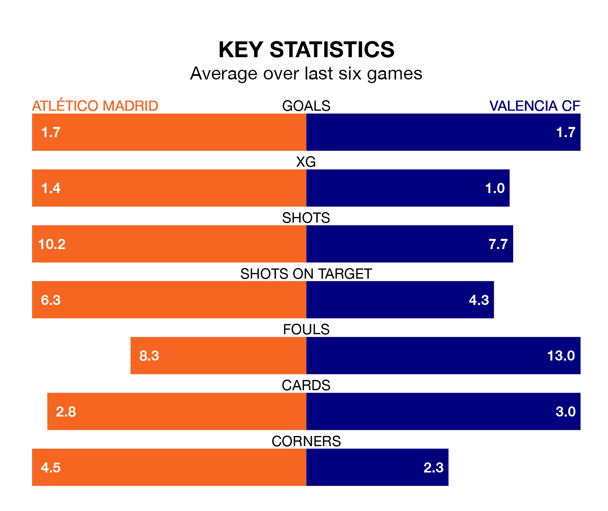

Atlético Madrid are heavy favourites to keep all three points at home in Sunday's late kick-off against Valencia CF.
Atlético, who sit fifth in La Liga with 20 games played, are priced at 1.6 to seal victory at the Estádio Cívitas Metropolitano.
Sitting two places and nine points behind them in the table, Valencia are 5.0 to win with *Betting Company*, while the draw is at 4.2.
With 40 goals in 20 games so far this season, Atlético are the league's joint-third-highest scorers with 2.0 goals per game. And they are conceding fewer than average, letting in 23 goals at a rate of 1.1 per game.
Valencia, meanwhile, are average scorers, with 1.3 goals per game. They have conceded 1.1 goals per game.
In the last 10 years, Atlético and Valencia have played each other on 20 occasions. Atlético won 12 of them, Valencia two, and they drew six times.
On average, Atlético scored 1.8 goals and Valencia 1.0 in those matches.
Their last meeting was on September 16, when Valencia won 3-0 at home.
In Alvaro Morata, the home team have one of the league's most on-form strikers so far this season. He has notched 13 goals in 19 appearances, to sit third in the scoring charts.
His goal rate of one every 104 minutes is quicker than that of Hugo Duro, the visitors' top scorer with a goal every 192 minutes, and a total of nine goals in 21 games.
Atlético are in mixed form in La Liga, with three wins and a draw from their last six games.
With four wins and a draw over that period, Valencia's form is better – they have taken 13 points from 18, compared to Atlético's 10.
Atlético's last match was on Monday, a 1-0 win against Granada CF, with Morata Martín getting the goal for Atlético.
Valencia beat Athletic Club Bilbao 1-0 last time out, on January 20, with Duro Perales on the scoresheet.
Updated: 08:51 (UTC), 25/01/24